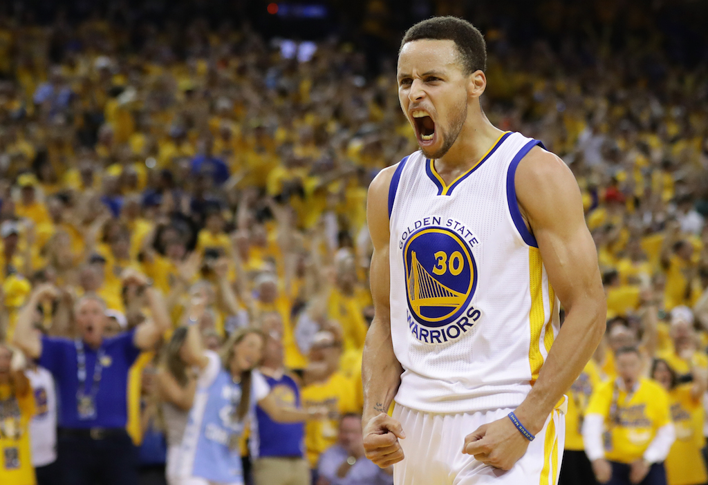

Dans une grosse nuit de NBA, avec pas moins de neuf matches au programme, on peut noter les victoires de Cleveland, Milwaukee et Washington à l’est. À l’ouest, les Warriors ont remporté le petit choc face au Magic d’Orlando. La jeunesse de Philadelphie c’est elle payée les Clippers de Los Angeles et continue sont joli début de saison. Retrouvez les classements, résumés et vidéos de la nuit NBA.

Source: CheatSheet
Les Warriors n'ont pas fait de détails face aux Sixers qui ont eu le culot de les accrocher pendant deux périodes et demie. Stephen Curry (22 points), Kevin Durant (29 pts) et leurs coéquipiers ont mis KO Philadelphie lors d'une troisième période à sens unique (36-21). Ils ont signé leur sixième victoire de suite, toutes acquises avec un minimum de 17 points d'avance. La rencontre avait pourtant débuté par une grosse frayeur pour Golden State avec la sortie sur blessure de Curry dès les premières minutes, mais le double MVP est rapidement revenu sur le terrain.
Source: Voir l'original